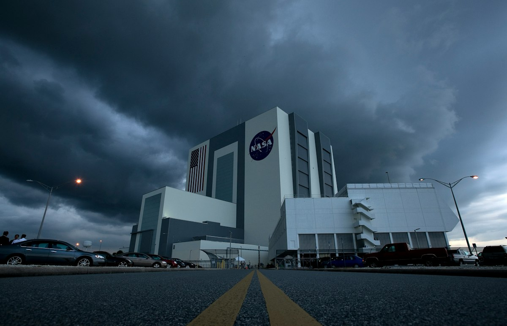

NASA Loses Swift After Rescue Attempt Fails in Upper Atmosphere
A failed docking effort seals the fate of an aging gamma-ray sentinel in low Earth orbit.

NASA's Swift space telescope met its end on November 4, 2026, when a failed rescue operation sent the veteran observatory plunging back into Earth's atmosphere. The loss marks the definitive conclusion of a mission that spent years monitoring transient cosmic explosions, and demonstrates that attempting to dock with an unprepared legacy spacecraft carries higher operational risk than building replacement instruments from scratch. Orbital mechanics enforces absolute penalties on vehicles running low on control margin.
The salvage effort attempted to intercept a platform never designed for robotic capture. Without standard grapple fixtures, rendezvous operations rely on tenuous friction clamps and fragile solar array hinges. Swift began its life when servicing concepts remained tethered to human spaceflight crews. When ground operators attempted to stabilize the spacecraft, the physical interface simply could not withstand the mechanical docking loads.
The Mechanics of Low Orbit Decay
Every satellite orbiting below six hundred kilometers fights thin atmospheric gases. Residual atomic oxygen impacts the forward surfaces constantly. This friction leaches orbital velocity and converts kinetic energy into thermal waste. Over months, an observatory dips into denser gas layers where drag compounds exponentially.
Swift operated without on-board propellant reserves capable of performing significant orbit-raising burns. Once the perigee dropped below sustainable thresholds, control teams faced a fixed countdown dictated by thermospheric density. The upper atmosphere contracts and expands with solar activity, altering deceleration rates across single orbital passes. Operators could track the descending trajectory, but tracking cannot arrest orbital geometry.
Hardware decays without fuel.
The Anatomy of a Rescue Window
Engineering teams that attempt orbital recovery must sync inclination, phase angle, and relative velocity before propellant runs out. The rescue vehicle had to match the eccentric path of Swift while canceling tumbling rates across three axes. A misaligned approach sensor or a late thruster firing turns a gentle capture into an elastic collision.
Planning to catch a tumbling observatory with unproven hardware is mostly an exercise in expensive optimism. During the rendezvous sequence, the approaching vehicle struggled to secure a firm mechanical anchor against the bus. The contact induced unexpected torque on Swift, accelerating the rate of altitude loss. Instead of boosting the observatory into a parking orbit, the interaction deepened the descent profile.
Atmospheric Drag Versus Orbital Capture
The core physics of capture missions leaves very little room for software latency. An interceptor spacecraft must calculate thruster firings across millisecond windows while thruster plumes impinge on the target. If the plumes strike an uncontrolled science satellite, they alter its attitude unpredictably. Swift suffered precisely from this dynamic perturbation during the final proximity maneuvers.
Engineers on the ground watched the jittering amber ground trace on mission tracking displays as separation distance widened unexpectedly. The rescue spacecraft expended its remaining attitude control propellant trying to damp the induced rotation. Once the vehicles drifted apart, the altitude gap widened beyond recovery range. At that point, the atmosphere assumed complete control of the trajectory.
The Counter-Argument for Passive Abandonment
Supporters of the intervention argued that high-energy astrophysics could not afford the loss of an active gamma-ray detector. Building and launching a new space observatory requires years of budget appropriations and rigorous instrument integration. From a program perspective, risking a low-cost interceptor vehicle seemed like a justifiable gamble to preserve operational astronomy assets. The replacement cost of specialized high-energy detectors frequently exceeds the cost of secondary commercial launch rides.
Yet that operational logic ignores the structural reality of aging hardware in declining orbits. Swift had already operated well past its primary design lifespan under harsh thermal cycling. Its reaction wheels, electrical insulation, and optical baffles suffered decades of radiation damage. Attempting to save a degrading platform diverted focus and budget away from resilient follow-on missions. The failed rescue cost two operational hardware assets rather than one.
Telemetry Limits and Orbital Tracking Gaps
Reconstructing the failure of a remote capture operation presents distinct analytical hurdles. Flight teams depend on telemetry streams transmitted across sparse ground station coverage windows. During the final critical approach passes, direct optical verification remained limited to onboard cameras with low frame rates. The exact mechanical failure sequence at the contact point cannot be verified without recovered telemetry files.
Space surveillance radar networks tracked the physical separation of the two objects after contact failed. Those radar signatures confirmed that the spacecraft separated into two distinct ballistic trajectories. The salvage vehicle managed to clear the immediate reentry corridor, but Swift retained an unrecoverable descent rate. The observatory crossed the upper atmospheric interface within hours of the aborted contact attempt.
The Cost of Unprepared Low Earth Architecture
Modern satellite platforms increasingly incorporate passive magnetic docking plates and reflective alignment targets. Swift preceded these operational standards by several decades, carrying smooth aluminum shielding and fragile instrument covers. Approaching such a vehicle requires autonomous computer vision to guess structural anchor points in fluctuating orbital sunlight. Shadows cast by solar arrays frequently deceive edge-detection algorithms during close proximity operations.
The mission outcome reinforces why standard capture interfaces must become mandatory for large orbital platforms. Without standardized hard points, every salvage attempt becomes a high-risk bespoke experiment conducted in microgravity. Ground controllers cannot overcome missing structural fixtures using software workarounds alone. When mechanical grip fails in low orbit, physical drag claims the vehicle immediately.
Operational Consequences for Aging Platforms
The destruction of Swift removes a critical continuous monitor from global high-energy astrophysics networks. Ground-based optical observatories depend on rapid alerts from spaceborne instruments to study transient deep-space phenomena. Without an active gamma-ray burst detector in this orbital plane, astronomical trigger networks will experience measurable response delays.
The exact fragmentation profile and heating distribution during the breakup remain impossible to measure without locating physical debris fields. Most aluminum hull components vaporize during hypersonic descent, leaving only refractory metals to survive atmospheric transition. The loss clarifies the practical limit of orbital life extension for legacy observatories. Space agencies must design for controlled disposal at launch rather than improvising mechanical salvation during atmospheric entry.